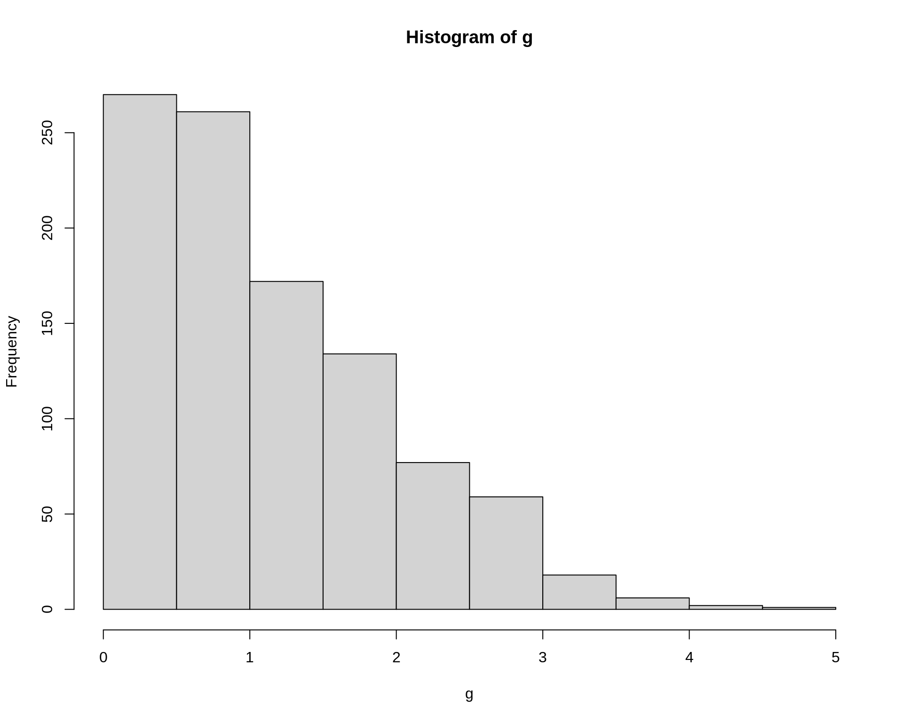
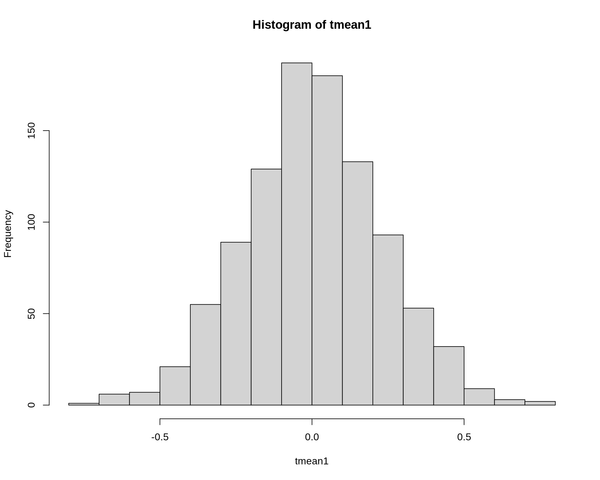
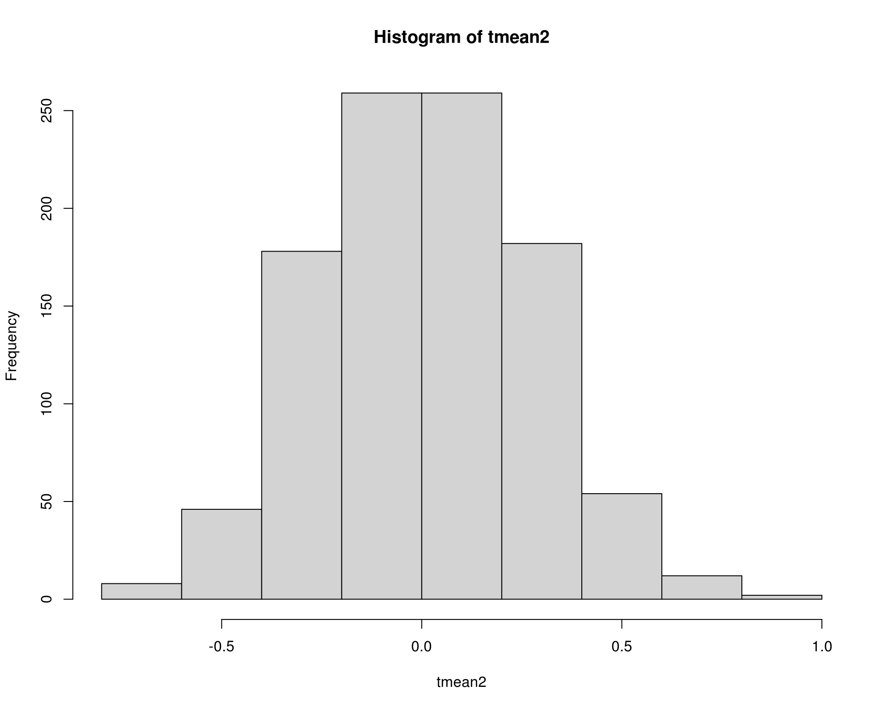
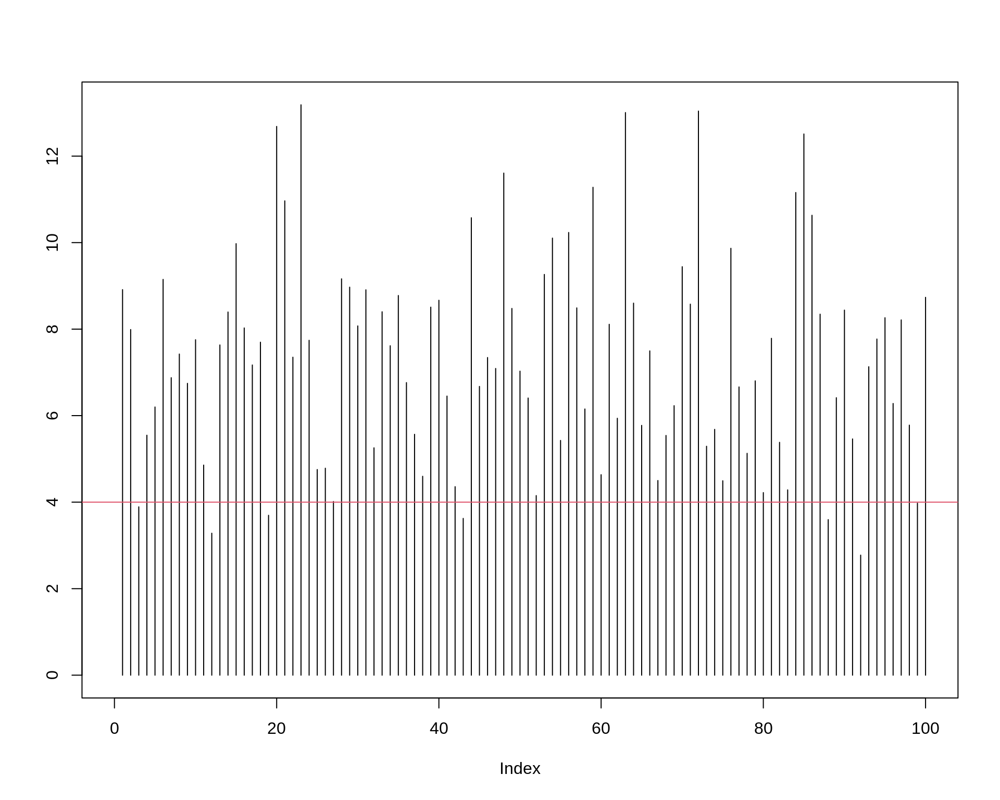
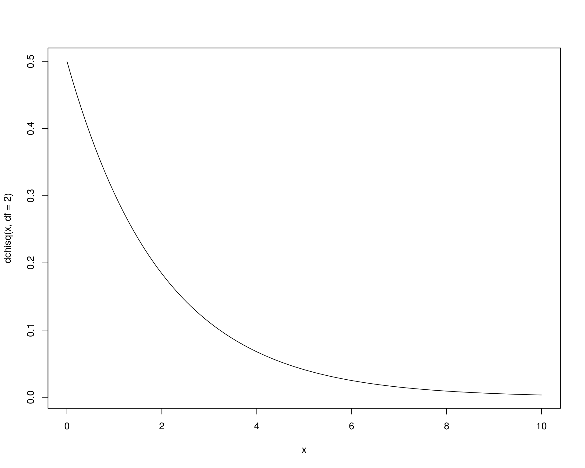
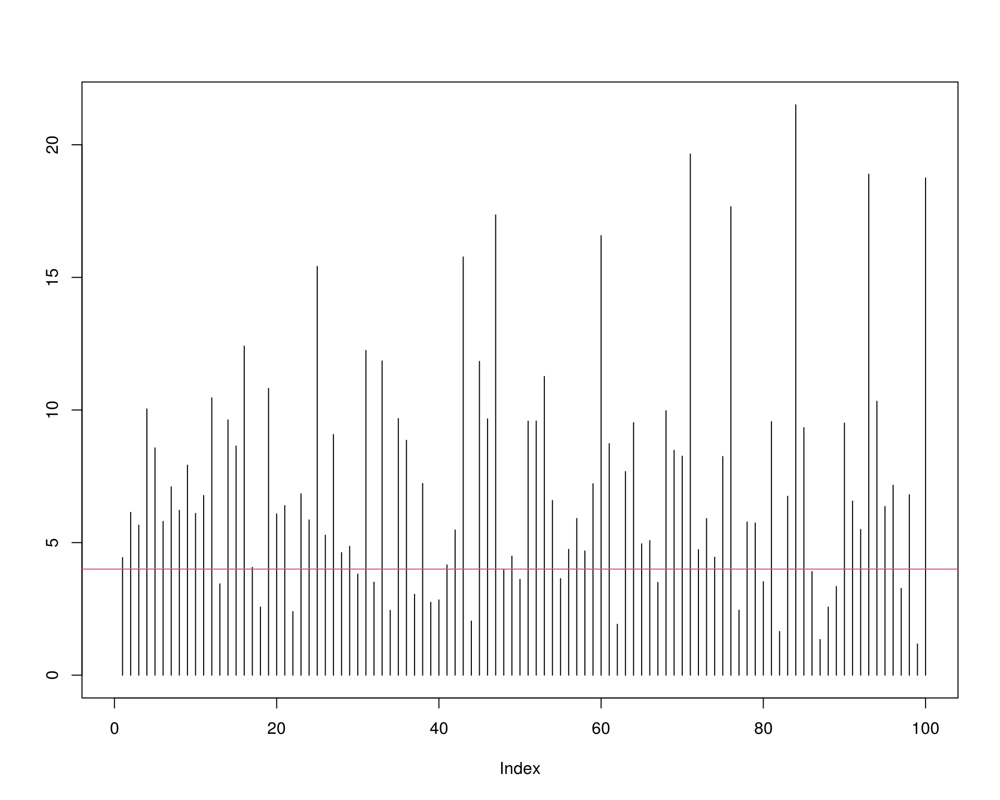

Métodos de Monte Carlo em inferência estatística
Estimação
Fernando P. Mayer
1 Introdução
- Métodos de Monte Carlo representam uma série de ferramentas computacionais na estatística moderna.
- Os métodos de Monte Carlo podem se referir à qualquer método em inferência estatística ou análise numérica onde algum método de simulação é utilizado.
- Os métodos de Monte Carlo podem ser usados para:
- Estimar parâmetros através da distribuição amostral de uma estatística
- Calcular o erro quadrático médio (EQM) de uma estimativa
- Estimar o nível de cobertura de intervalos de confiança
- Encontrar a taxa empírica do erro tipo I em um teste de hipótese
- Estimar o poder de um teste de hipótese
- Comparar a performance de diferentes procedimentos aplicados a um mesmo problema
- Na inferência estatística, sabemos que sempre existe incerteza associada a qualquer estimativa
- Para investigar a incerteza, o método apresentado aqui, também chamado de bootstrap paramétrico, utiliza repetidas amostragens de um modelo probabilístico
- Se podemos simular o processo estocástico que gerou os dados, através da geração de diferentes amostras sob as mesmas condições, esperamos ao final ter uma réplica aproximada do processo em si, refletido nas amostras
2 Métodos de Monte Carlo para estimação
Suponha \(X_1, \ldots, X_n\) uma amostra aleatória da distribuição de \(X\). Um estimador \(\hat\theta\) para um parâmetro \(\theta\) é a função \[ \hat\theta = T(x_1, \ldots, x_n) \] da amostra. Seja \(\mathbf{x} = (x_1, \ldots, x_n)' \in \mathcal{R}^n\), e vamos denotar por \(\mathbf{x}^{(1)}, \mathbf{x}^{(2)}, \ldots\), uma sequência de amostras aleatórias independentes geradas a partir da distribuição de \(X\).
Valores aleatórios da distribuição amostral de \(\hat\theta\) podem ser obtidos através de \(N\) repetidas amostras aleatórias independentes \(\mathbf{x}^{(j)}\), e calculando-se \[ \hat\theta^{(j)} = T(x_1^{(j)}, \ldots, x_n^{(j)}) \quad j = 1, \ldots, N \]
Dessa forma, se \(\hat\theta\) é uma estimativa de \(\theta\) da distribuição \(f\), então as amostras de um bootstrap paramétrico de \(f_{\hat\theta}\) são \[ f_{\hat\theta} \longrightarrow \mathbf{x}^{(j)} \longrightarrow \hat\theta^{(j)} \]
A distribuição amostral de \(\hat\theta^{(j)}\) deve ser próxima da distribuição amostral verdadeira para \(N\) grande. A média da distribuição \[ \hat\theta_{MC} = \frac{1}{N} \sum_{j=1}^{N} \hat\theta^{(j)} \] será então uma estimativa pontual para \(\theta\).
Um dos principais objetivos de se usar métodos de Monte Carlo para estimação de algum parâmetro, é o cálculo da incerteza associada à estimativa, expressa geralmente pelo erro padrão.
- Em muitos casos, o erro padrão de uma estimativa pode ser obtido diretamente de forma analítica
- Em casos mais complexos, a forma analítica pode não existir e mesmo a distribuição amostral pode ser desconhecida
- Nesses casos, a distribuição amostral empírica construída pelo método de Monte Carlo pode ser utilizada
Portanto, a estimativa do erro padrão pelo método de Monte Carlo é o desvio padrão empírico da amostra dos \(\hat\theta^{(j)}\), \[ ep_{MC} = \frac{1}{N-1} \sqrt{\sum_{j=1}^{N} (\hat\theta^{(j)} - \hat\theta_{MC})^2} \]
2.1 Exemplo: Estimação de Monte Carlo de um erro padrão
Suponha \(X_1, X_2\) são duas VAs iid de uma normal padrão. Usando simulação de Monte Carlo, obtenha uma estimativa de \(\text{E}(|X_1 - X1|)\), e seu erro padrão.
Para estimar \(\theta = \text{E}(g(X_1, X_2)) = \text{E}(|X_1 - X_2|)\), baseado em \(N\) amostras, gere as variáveis aleatórias \(\mathbb{x}^{(j)} = (x_1^{(j)}, x_2^{(j)})\) da normal padrão, \(j = 1, \ldots, N\).
Calcule \(\hat\theta^{(j)} = g_j(x_1^{(j)}, x_2^{(j)}) = |x_1^{(j)} - x_2^{(j)}|\), e calcule a média.
N <- 1000
g <- numeric(N)
for (i in 1:N) {
x <- rnorm(2)
g[i] <- abs(x[1] - x[2])
}
(est <- mean(g))
# [1] 1.131141
hist(g)
Por integração, o resultado é \(\text{E}(|X_1 - X_2|) = 2/\sqrt{\pi} = 1.1284\).
Em uma amostra de Monte Carlo, o tamanho da amostra é \(N\), por isso, o erro padrão da estimativa será
## Variância da distribuição amostral
sum((g - est)^2)/(N - 1)
# [1] 0.7158632
var(g)
# [1] 0.7158632
## Erro padrão = desvio padrão da distribuição amostral
sqrt(sum((g - est)^2))/(N - 1)
# [1] 0.02676901
sd(g)/sqrt(N - 1)
# [1] 0.02676901Pode-se mostrar que o valor exato é \(ep = \sqrt{(2 - 4/\pi)/N} = 0.0269\).
2.2 Exemplo: Erro Quadrático Médio
O Erro Quadrático Médio (EQM) de um estimador \(\hat{\theta}\) de \(\theta\) é dado por \[\begin{align*} \text{EQM}[\hat{\theta}] &= \text{E}[(\hat{\theta} - \theta)^2] \\ &= \text{Var}[\hat{\theta}] + \text{B}[\hat{\theta}]^2 \end{align*}\] onde \[\text{B}[\hat{\theta}] = \text{E}[\hat\theta] - \theta\] é denominado de vício do estimador \(\hat\theta\). Portanto, dizemos que um estimador é não viciado para \(\theta\) quando \[\text{B}[\hat{\theta}] = 0 \quad \Rightarrow \quad \text{E}[\hat{\theta}] = \theta\]
O EQM é comumente empregado na comparação de estimadores. Podemos dizer que \(\hat\theta_1\) é melhor do que \(\hat\theta_2\) se \[ \text{EQM}[\hat{\theta}_1] \leq \text{EQM}[\hat{\theta}_2] \] para todo \(\theta\), com \(\leq\) substituído por \(<\) pelo menos para um valor de \(\theta\).
Se os estimadores são não viciados, então \[ \text{Var}[\hat{\theta}_1] \leq \text{Var}[\hat{\theta}_2] \] Nesse caso, \(\hat{\theta}_1\) é dito ser o Estimador Não Viciado de Variância Uniformemente Mínima (ENVVUM).
Considere o problema de se obter uma estimativa de centro de uma distribuição simétrica, sem considerar a média amostral. Podemos pensar em dois estimadores: a média aparada e a mediana. Qual dos dois estimadores é “melhor” para estimar a média populacional \(\mu\)?
Suponha que \(X_1, \ldots, X_n\) é uma amsotra aleatória de \(X\), e \(X_{(1)}, \ldots, X_{(n)}\) é a correspondente amostra ordenada. A média aparada de primeiro nível é calculada retirando-se o menor e o maior valor da amostra. De maneira mais geral, a média aparada de \(k\)-ésimo nível pode ser definida como \[ \overline{X}_{[-k]} = \frac{1}{n-2k} \sum_{i=k+1}^{n-k} X_{(i)} \]
Vamos obter o EQM da média aparada de primeiro nível (\(\overline{X}_{[-1]}\)) assumindo que \(X \sim \text{N}(0,1)\). Nesse exemplo, a média da distribuição é zero, e o parâmetro de interesse é \(\theta = \text{E}[\overline{X}] = \text{E}[\overline{X}_{[-1]}] = 0\). Considere que a média aparada de primeiro nível é \(T\). Uma estimativa de \(\text{EQM}[T]\) baseado em \(N\) replicações é obtida da seguinte forma:
- Gera as repetições \(T^{(j)}, j=1, \ldots, N\) repetindo:
- Gere \(x_1^{(j)}, \ldots, x_n^{(j)}\) iid da distribuição de \(X\)
- Ordene \(x_1^{(j)}, \ldots, x_n^{(j)}\) em ordem crescente, \(x_{(1)}^{(j)} \leq \ldots \leq x_{(n)}^{(j)}\)
- Calcule \(T^{(j)} = \frac{1}{n-2} \sum_{i=2}^{n-1} x_{(i)}^{(j)}\)
- Calcule \(\widehat{\text{EQM}} = \frac{1}{N} \sum_{j=1}^{N} (T^{(j)} - \theta)^2 = \frac{1}{N} \sum_{j=1}^{N} (T^{(j)})^2\)
## Tamanho da amostra
n <- 20
## Número de repetições
N <- 1000
tmean1 <- numeric(N)
for (i in 1:N) {
x <- sort(rnorm(n))
tmean1[i] <- sum(x[2:(n - 1)])/(n - 2)
}
## Estimativa pontual
(m.tmean1 <- mean(tmean1))
# [1] 0.006333479
## Variância
sum((tmean1 - m.tmean1)^2)/(N - 1)
# [1] 0.05371879
## Erro padrão = desvio padrão da distribuição amostral
sqrt(sum((tmean1 - m.tmean1)^2))/(N - 1)
# [1] 0.007332978
## EQM
(eqm1 <- mean(tmean1^2))
# [1] 0.05370518
hist(tmean1)
Note que a média aparada é um estimador não viesado para a média populacional, portanto \(\text{EQM}[\theta] = \text{Var}[\theta] = \text{Var}[X]/n\), que é igual a \(1/20 = 0.05\), o que mostra que nossa estimativa está próxima.
Repare que a mediana também é uma média aparada: ela “apara” todos os valores das caudas menos um (quando \(n\) for ímpar), ou dois (quando \(n\) for par), e calcula a média. Portanto, podemos reptir o mesmo procedimento para a mediana.
n <- 20
N <- 1000
tmean2 <- numeric(N)
for (i in 1:N) {
x <- sort(rnorm(n))
tmean2[i] <- median(x)
}
## Estimativa pontual
(m.tmean2 <- mean(tmean2))
# [1] 0.006313864
## Variância
sum((tmean2 - m.tmean2)^2)/(N - 1)
# [1] 0.0701361
## Erro padrão = desvio padrão da distribuição amostral
sqrt(sum((tmean2 - m.tmean2)^2))/(N - 1)
# [1] 0.008378921
## EQM
(eqm2 <- mean(tmean2^2))
# [1] 0.07010583
hist(tmean2)
Agora podemos comparar qual dos dois estimadores é o melhor para a média populacional, através dos EQMs.
## Qual dos dois possui menor EQM
eqm1 <= eqm2
# [1] TRUE
## Eficiência relativa
eqm1/eqm2
# [1] 0.7660587Na última linha calculamos também a eficiência relativa entre dois estimadores, ou seja, a eficiência relativa de \(\hat{\theta}_1\) em relação a \(\hat{\theta}_2\) é \[ \text{ER}[\hat{\theta}_1, \hat{\theta}_2] = \frac{\text{Var}[\hat{\theta}_1]}{\text{Var}[\hat{\theta}_2]} \]
Por esses resultados concluimos que ambos estimadores, média aparada de primeiro nível e mediana, são não viesados para estimar a média populacional \(\mu\), mas a média aparada é um estimador melhor, ou mais eficiente do que a mediana.
2.3 Exemplo: Estimativa de nível de confiança
Seja \(X_1, \ldots, X_n\) uma amostra aleatória de uma \(\text{N}(\mu, \sigma^2)\), onde \(s^2\) é a variância amsotral. Considere o problema de estimar um intervalo de confiança para \(s^2\).
Do Teorema Central do Limite (TCL) sabemos que \(\bar{X} \sim \text{N}(\mu, \frac{\sigma^2}{n})\). Como não conhecemos \(\sigma^2\), usamos \(s^2\) no lugar. Assim, temos que: \[ \widehat{Var[\bar{X}]} = \frac{s^2}{n} \quad \text{e} \quad \widehat{EP[\bar{X}]} = \frac{s}{\sqrt{n}} \]
Para obter a variância de \(s^2\), precisamos lembrar que \[ \frac{(n-1)s^2}{\sigma^2} \sim \chi_{(n-1)}^{2} \]
Lembrando também que para uma variável aleatória \(X\) com distribuição qui-quadrado com \(k\) graus de liberdade, \(X \sim \chi^2_k\), temos \(E[X] = k\), e \(Var[X] = 2k\). Assim, calculamos a esperança como
\[\begin{align*} E\left[ \frac{(n-1)s^2}{\sigma^2} \right ] &= n-1 \\ \frac{(n-1)}{\sigma^2} E[s^2] &= n-1 \\ E[s^2] &= \frac{(n-1)\sigma^2}{(n-1)} \\ E[s^2] &= \sigma^2 \end{align*}\]
Portanto, confirmamos que essa é uma estimativa não viesada. Da mesma forma, calculamos a variância como:
\[\begin{align*} Var\left[ \frac{(n-1)s^2}{\sigma^2} \right ] &= 2(n-1) \\ \frac{(n-1)^2}{\sigma^4} Var[s^2] &= 2(n-1) \\ Var[s^2] &= \frac{2(n-1)\sigma^4}{(n-1)^2} \\ Var[s^2] &= \frac{2\sigma^4}{n-1} = \frac{2(\sigma^2)^2}{n-1} \end{align*}\]
Como usamos \(s^2\) no lugar de \(\sigma^2\), temos então que
\[ \widehat{Var[s^2]} = \frac{2(s^2)^2}{n-1} \]
O erro-padrão de \(s^2\) é então a raíz quadrada desta variância, ou seja,
\[ \widehat{EP[s^2]} = \sqrt{\widehat{Var[s^2]}} = \sqrt{\frac{2(s^2)^2}{n-1}} = s^2 \sqrt{\frac{2}{n-1}} \]
Um intervalo de confiança unilateral de \(100(1-\alpha)\%\) de confiança é dado por \[ \left(0, \frac{(n-1)s^2}{\chi^2_{\alpha}} \right) \] onde \(\chi^2_{\alpha}\) é o \(\alpha\)-quantil de uma distribuição \(\chi^2 (n-1)\). Se a população amostrada é normal com variância \(\sigma^2\), então a probabilidade de que o intervalo contenha \(\sigma^2\) é exatamente \(1-\alpha\). Por exemplo, para \(\alpha = 0.05\), \[ \begin{align*} P\left(\frac{(n-1)s^2}{\sigma^2} > \chi^2_{.05}(n-1) \right) &= 0.95 \\ P\left(\frac{(n-1)s^2}{\chi^2_{.05}(n-1)} > \sigma^2 \right) &= 0.95 \end{align*} \]
Por exemplo, o cáculo do limite superior do intervalo de \(95\%\) de confiança para uma amostra de tamanho \(n=20\) de uma \(\text{N}(0, 4)\) é
n <- 20
alpha <- .05
x <- rnorm(n, mean = 0, sd = 2)
(UCL <- (n - 1) * var(x) / qchisq(alpha, df = n - 1))
# [1] 4.388738que contém o verdadeiro valor \(\sigma^2 = 4\). Se repetirmos esse processo várias vezes, esperamos então que aproximadamente \(95\%\) das vezes, o intervalo contenha o verdadeiro valor de \(\sigma^2\), assumindo que a população amostrada é normal com variância \(\sigma^2\).
De maneira geral, um algoritmo para calcular o nível de confiança empírico para uma estimativa de algum parâmetro \(\theta\) é:
- Para cada repetição, indexada em \(j = 1, \ldots, N\)
- Gere a \(j\)-ésima amostra aleatória, \(x_1^{(j)}, \ldots, x_n^{(j)}\)
- Calcule o intervalo de confiança \(C_j\) para a \(j\)-ésima amostra
- Calcule \(y_j = I(\theta \in C_j)\) para a \(j\)-ésima amostra
- Calcule o nível de confiança empírico \(\bar{y} = \frac{1}{N}\sum_{j=1}^{N} y_j\)
A proporção amostral de intervalos que contém \(\theta\) é então uma estimativa de Monte Carlo do verdadeiro nível de confiança \((1-\alpha)\).
(Note aqui o uso da função replicate() no lugar do for()).
n <- 20
m <- 1000
alpha <- .05
UCL <- replicate(m, expr = {
x <- rnorm(n, mean = 0, sd = 2)
(n - 1) * var(x) / qchisq(alpha, df = n - 1)
})
## Número de intervalos que contém sigma^2 = 4
sum(UCL > 4)
# [1] 943
## Nível de confiança empírico
sum(UCL > 4)/N
# [1] 0.943
mean(UCL > 4)
# [1] 0.943Veja que o nível de confiança empírico é muito próximo do nível de confiança teórico, de \(95\%\). Para 100 intervalos calculados, podemos visualizar o procedimento:
UCL.sim <- replicate(100, expr = {
x <- rnorm(n, mean = 0, sd = 2)
(n - 1) * var(x) / qchisq(alpha, df = n - 1)
})
plot(NULL, NULL, xlim = c(0, 100), ylim = c(0, max(UCL.sim)), ylab = "")
segments(1:100,
0,
1:100,
UCL.sim)
abline(h = 4, col = 2)
Sabemos que o cálculo de intervalos de confiança para a variância é bastante sensível à fugas da normalidade. Ou seja, se a população amostrada não for normal, então o cálculo do intervalo de confiança possivelmente será afetado, refletindo no nível de confiança.
Por exemplo, suponha que ao invés de normal, os dados foram obtidos a partir de uma população que segue uma distribuição \(\chi^2\) com 2 graus de liberdade, que também possui variância 4, mas claramente não é normal.

Podemos repetir o procedimento acima, substituindo as amostras de \(X\) da normal pela \(\chi^2(2)\) e verificar qual seria então o nível de confiança empírico.
n <- 20
m <- 1000
alpha <- .05
UCL <- replicate(m, expr = {
x <- rchisq(n, df = 2)
(n - 1) * var(x) / qchisq(alpha, df = n - 1)
})
## Número de intervalos que contém sigma^2 = 4
sum(UCL > 4)
# [1] 788
## Nível de confiança empírico
sum(UCL > 4)/N
# [1] 0.788
mean(UCL > 4)
# [1] 0.788Veja que, embora estamos calculando intervalos teóricos de \(95\%\), o nível de confiança é na verdade bem mais baixo, o que pode levar à conclusões equivocadas nesse caso onde a população não é normal.
Visualmente temos:
UCL.sim <- replicate(100, expr = {
x <- rchisq(n, df = 2)
(n - 1) * var(x) / qchisq(alpha, df = n - 1)
})
plot(NULL, NULL, xlim = c(0, 100), ylim = c(0, max(UCL.sim)), ylab = "")
segments(1:100,
0,
1:100,
UCL.sim)
abline(h = 4, col = 2)

Este conteúdo está disponível por meio da Licença Creative Commons 4.0